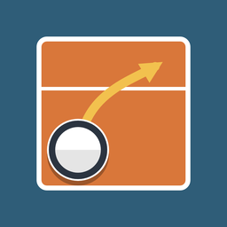

Volleyball Tactics Board+
Support
About the app
A simple, magnet-style volleyball tactics board for iPhone and iPad. Drag pieces onto the court, draw straight lines, curves and arrows, and share your board as an image.
Frequently asked questions
- How do I draw a line? Trace over an empty part of the board. Tap the pen button to choose straight, curved or freehand lines, and the line style, width and color.
- How do I fix a line? Tap the line, then drag its end points. Drag the yellow handle in the middle to bend it.
- How do I change a piece’s color or add a label? Tap the piece to open its menu.
- How many boards can I save? Up to 5 in the free version. The one-time upgrade removes the limit, ads and the image watermark.
- I changed devices. How do I get my upgrade back? Open Settings in the app and tap “Restore Purchases”, signed in with the same Apple Account.
- Are my boards backed up? Boards are saved only on your device. Deleting the app deletes them.
Contact
For questions or bug reports, email miya.no1v10@gmail.com. Please include your device model and iOS version.
バレーボール作戦ボード+
サポート
アプリについて
マグネットの作戦盤のように使える、シンプルなバレーボールの作戦ボードです（iPhone・iPad対応）。コマをコートに置いて動かし、直線・曲線・矢印を描いて、作った作戦を画像で共有できます。
よくある質問
- 線はどうやって引きますか？ ボードの空いている所をなぞると線が引けます。ペンのボタンから、直線・曲線・フリーの描き方と、線の種類・太さ・色を選べます。
- 描いた線を直したいです。 線をタップして、端の丸を動かしてください。真ん中の黄色いつまみを引っ張ると曲げられます。
- コマの色を変えたり、文字を入れたりできますか？ コマをタップするとメニューが開き、色やラベルを変更できます。
- ボードは何件保存できますか？ 無料版は5件までです。買い切りのアップグレードで、保存数の制限・広告・画像の透かしがなくなります。
- 機種変更したら購入が消えました。 アプリの設定画面で「購入を復元」をタップしてください（購入時と同じAppleアカウントでサインインしている必要があります）。
- ボードはバックアップされますか？ ボードは端末内にのみ保存されます。アプリを削除するとボードも削除されます。
お問い合わせ
ご質問・不具合のご報告は miya.no1v10@gmail.com までご連絡ください。お使いの機種とiOSのバージョンも添えていただけると助かります。